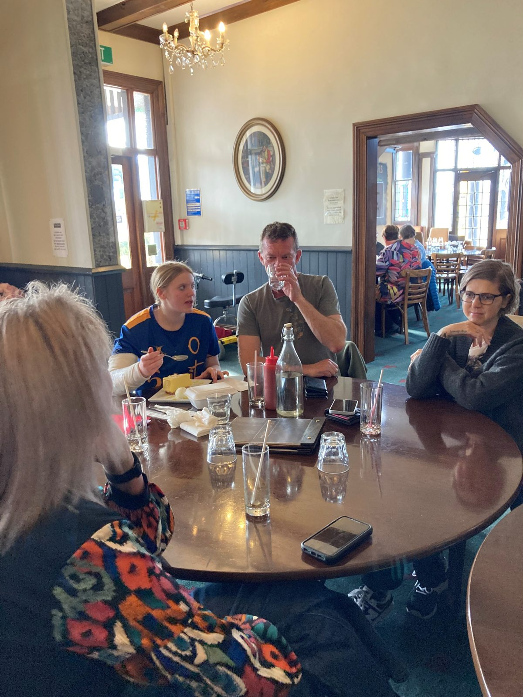

Lunches, World Kidney Day, the AGM, and other gatherings of the Otago renal community. Everyone is welcome — members, whānau, and friends.
Our final lunch of the year, on Sunday 6 December at the Post Office in Clyde, Central Otago. Always a festive afternoon with great company. Bring a partner, friend or whānau member — and watch the newsletter for RSVP details.
Each March we run a stand in central Dunedin — most recently at Wall Street Mall — in partnership with Kidney Health New Zealand. Free blood-pressure checks and kidney function tests, plus information for everyone. In 2026 around half the people tested were advised to follow up with their GP, so it is well worth a visit.
Held each autumn at Dunedin Hospital, usually in March. All members welcome. Receive the annual report and audited financials, elect the committee, and have your say on the year ahead. Watch the newsletter for the date.

“It was lovely to meet other people in the same situation, and I didn’t feel so lonely or isolated.” That’s a comment we hear at almost every lunch.
If you’ve never been to one — give it a try. They’re relaxed, they’re welcoming, and you don’t need to know anyone to come along. We hold them in different parts of Otago through the year, so most members can get to one without a long drive.
OKS contributes $10 toward each member’s meal. We typically hold them in pubs or cafes that can offer a private room or a quiet corner.
2025 / 2026
We’re honoured to welcome Katherine Rich as our patron. Some of you will remember her father, the late Jock Ellison — a former OKS President who fought tirelessly for organ donation reform. Katherine is keen to meet members and to champion our cause with ministers.
2025
OKS donated $5,000 toward the new dialysis treatment van — a vital service used by a number of our members. In return, Christchurch Kidney Society sent us black bags we now use for our welcome gift packs.
2025
The previous ice machine at the Dunedin Dialysis Unit had stopped working — so OKS purchased a replacement. Small things make a real difference for patients spending hours in treatment.
2025
It was with great sadness that we lost one of our biggest committee supporters, Stew MacLeod. He championed our causes and quietly distributed our brochures across hospital departments, doctors’ surgeries and community spaces. We miss him very much.